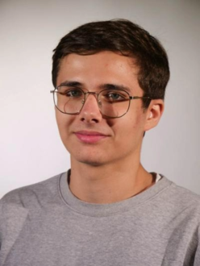

Lukas Bertin

Chef de projets Digitaux
communication digitale
À PROPOS
Étudiant à la Normandie Web School, je suis à la
recherche d'un stage alterné non rémunéré du 10 mars
2025 au 10 juin 2025
qui me permettra de développer mes
connaissances en communication digitale tout en
continuant à apprendre aux côtés de
professionnels du
secteur. Curieux, dynamique et créatif, je suis motivé à
enrichir mon expérience sur les réseaux sociaux
FORMATION
Bachelor Chef de projet digitaux
Normandie Web School - 2024 - 2027 Rouen
Baccalauréat général
Lycée de la Vallée du Cailly - 2021 - 2024 Déville-les-Rouen
EXPÉRIENCE PROFESSIONNELLE
Caissier – Carrefour Market - Sotteville-les-Rouen - CDI
Octobre 2024 - présent
- Précision et rigueur : Gérer avec exactitude les
transactions monétaires.
- Relation client : Capacité à interagir avec les clients de
manière courtoise et professionnelle.
Caissier – Carrefour Market - Sotteville-les-Rouen - CDD
Juillet 2024
- Esprit d’équipe : Travailler efficacement avec les autres
membres de l’équipe pour assurer un service fluide et
rapide.
- Adaptabilité et flexibilité : S’adapter aux besoins
changeants du travail et aux exigences de l'entreprise.
COMPÉTENCES
- Canva
- Gestion des réseaux sociaux (Instagram, Facebook, X, TikTok)
- Anglais : Niveau B2
- Suite Adobe et WordPress : en cours
CENTRES D'INTÉRET
PROJETS
- Réalisation d'un événement pour le Bureau Des Étudiants de l'école (stratégie de communication, création de logo, publicité)
- Création de l'identité visuelle de l'association Club Éco Saint-Sever (Charte graphique, logo, mockup site web, élements de communications...)
INFORMATIONS